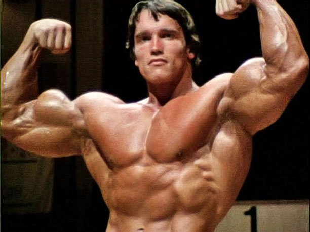
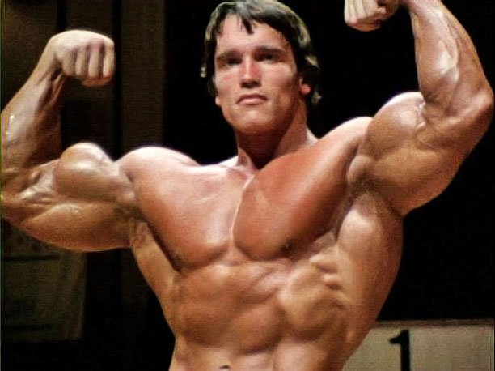

Arnold Schwarzenegger (1947) é um ator, político e empresário austro-americano. Ex-fisiculturista, foi herói de diversos filmes de ação, entre eles: “O Exterminador do Futuro” e “Conan, o Bárbaro”. Foi o 38º governador do estado da Califórnia permanecendo no cargo por dois mandatos, entre 2003 e 2011.
Arnold Schwarzenegger (1947) nasceu em Thal, na Áustria, no dia 30 de julho de 1947. Filho de um policial severo, desde jovem gostava de praticar esportes. Com 15 anos começou a fazer musculação e iniciou um treinamento intensivo com Kurt Marnul, Mr. Áustria. Sonhava ir para os Estados Unidos e se tornar campeão de fisiculturismo e astro do cinema.
Com 17 anos começou a competir no fisiculturismo e a receber prêmios. Em 1965 passou a servir o exército austríaco, mas mesmo proibido, continuou fazendo treinamento no quartel, e quando descoberto passou uma semana preso.
Nesse período, participou de sua primeira competição internacional e conquistou o título de Campeão Juvenil do Mister Europa, na Alemanha. Em 1967, com 20 anos, tornou-se o mais jovem atleta a ser campeão do Mr. Universo, em Londres.
Em 1968, mudou-se para os Estados Unidos, onde passou a ser treinado por Joe Weider. Continuou competindo e venceu mais três vezes o Mr. Universo, em 1968, 1969 e 1970. Pela NABBA (Inglaterra) e duas vezes pela IFBB (Estados Unidos), em 1968 e 1969. Em 1970, ganhou pela primeira vez o título de Mr. Olympia, e continuou vencendo a mesma competição em 1971, 1972, 1973, 1974, 1975 e ainda em 1980.
 
